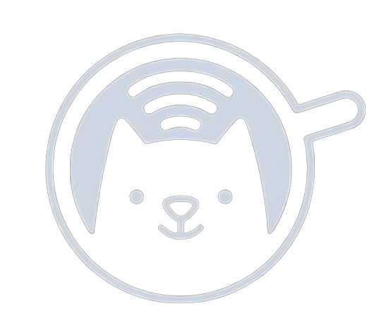

Joy of Missing Out

SEASONAL
KOPIKOE proudly present: Coffee Cat | Iced Coffee Mocktail | A seasonal yet has been very sensational for your taste & warmth Menu "Coffee and Cat" brings you harmonious blend but intense mixing around Cold Pressed Ethiopian Yirgacheffe, Root Beer, Homemade Falernum, Fresh Lime Juice & Rosemary then dry shaking into frothy foam.